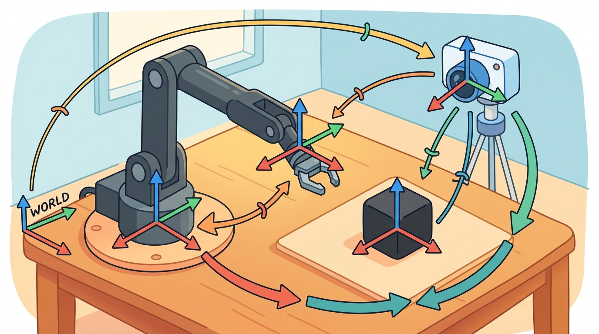

"A pixel tells you what the sensor saw. A frame tells you what the robot can do about it."
A Careful Control Loop

This section builds on the homogeneous transforms introduced in section 4.4 and the rotation representations covered in section 4.3. The camera-to-body-to-world chain developed here recurs in section 8.2 (depth camera calibration) and section 8.3 (IMU-to-body alignment), where the same frame-composition pattern is applied to real sensor hardware. In Part V, visual servoing and grasping pipelines depend directly on the pixel-to-body-frame conversion shown here.
A robot's camera detects a coffee cup at pixel (312, 204). That number means nothing to an arm. Before any joint can move, the system must answer three questions: where is the cup relative to the lens, where is the lens relative to the robot's body, and where is the body in the room? Every modern manipulation and navigation stack lives or dies on this three-frame chain. Master it here and you will be able to trace any pixel detection through intrinsics, extrinsics, and odometry into a world-frame grasp target your robot can actually reach.
This section develops the camera-to-robot coordinate chain used by embodied perception. First we define the camera optical frame and the body frame. Then we show how camera intrinsics convert a pixel and depth into a 3D camera-frame point. Finally we compose extrinsics so the same point becomes a body-frame or world-frame target.
The key question is practical: when a perception model marks a pixel, what additional calibration, depth, and transform information turns that pixel into a robot action?
A representation earns its place when it changes the measurable action interface. In Camera, body, and world frames, the reader should keep asking which decision becomes easier, safer, or more reliable.
A pixel coordinate is a question; a world-frame point is the answer the robot can act on.
Theory
A pinhole camera model maps a 3D camera-frame point $(X, Y, Z)$ to pixel coordinates $(u, v)$ using focal lengths $(f_x, f_y)$ and principal point $(c_x, c_y)$:
$$u = f_x\frac{X}{Z} + c_x, \qquad v = f_y\frac{Y}{Z} + c_y.$$
Back-projection reverses this mapping when depth $Z$ is known:
$$X = (u-c_x)\frac{Z}{f_x}, \qquad Y = (v-c_y)\frac{Z}{f_y}.$$
This derivation assumes a calibrated pinhole model after distortion correction, with matching image resolution and synchronized depth. OpenCV convention uses $x$ right, $y$ down, and $z$ forward. Robotics body frames use $x$ forward, $y$ left, and $z$ up. This mismatch is the axis-convention gap, and it is why camera-to-body extrinsics must be explicit. On a physical robot, ignoring the gap produces a categorical error: a point detected below the image center is downward in camera coordinates, but the body frame treats that direction as leftward. The arm then reaches along the wrong axis entirely. To fix this, apply a fixed rotation: rotate 90 degrees about the camera $x$-axis, then 90 degrees about the resulting $z$-axis. This swaps $y$-down into $z$-up and $z$-forward into $x$-forward, aligning the optical frame to the body frame. Every physical sensor that supplies depth, including cameras and structured-light depth sensors, defines its own optical frame. That per-sensor variation makes the axis-convention gap a persistent source of error.
Think of chaining frames like giving a tourist directions using nested reference points: "the bakery is 200 m north of the town hall, and the town hall is 3 km east of the highway exit." To find the bakery from the highway, you first apply the highway-to-town-hall step, then the town-hall-to-bakery step, in that order. Skipping the middle step or reversing the order lands you in the wrong city. Frame composition works exactly the same way: each transform is one "local directions" card, and you must apply the cards in the sequence that traces the actual chain of nested references, camera to body to world, never mixing up which card comes first.
Algorithm: Pixel-to-World Frame Projection
Input: pixel coordinates $(u, v)$, depth $Z$, camera intrinsics $(f_x, f_y, c_x, c_y)$, extrinsic transform $T_{\text{body},\text{cam}} \in \mathbb{R}^{4 \times 4}$, robot pose $T_{\text{world},\text{body}} \in \mathbb{R}^{4 \times 4}$
Output: 3D point $\mathbf{p}_{\text{world}} \in \mathbb{R}^3$ expressed in the world frame
- Verify that $(u, v)$ lies within the valid image region and that $Z > 0$; reject detections outside this domain.
- Apply back-projection to recover the camera-frame ray: $X = (u - c_x)\,Z / f_x$, $\;Y = (v - c_y)\,Z / f_y$.
- Form the homogeneous camera-frame point $\mathbf{p}_{\text{cam}} = [X,\, Y,\, Z,\, 1]^{\top}$.
- Load the extrinsic matrix $T_{\text{body},\text{cam}}$ from calibration storage; confirm it encodes both rotation $R$ and translation $\mathbf{t}$, not a pure translation.
- Transform to the body frame: $\mathbf{p}_{\text{body}} = T_{\text{body},\text{cam}}\,\mathbf{p}_{\text{cam}}$.
- Retrieve the current robot pose $T_{\text{world},\text{body}}$ from the state estimator, noting the timestamp $\tau$.
- Transform to the world frame: $\mathbf{p}_{\text{world}} = T_{\text{world},\text{body}}\,\mathbf{p}_{\text{body}}$.
- Check the timestamp gap $|\tau_{\text{depth}} - \tau_{\text{pose}}|$; if it exceeds the latency budget $\Delta\tau_{\max}$, mark the result stale and do not issue a grasp command.
- Record the full provenance: source pixel, depth sensor, $T_{\text{body},\text{cam}}$ version, pose timestamp, frame names, and unit convention (metres, radians).
- Return $\mathbf{p}_{\text{world}}[:3]$ to the downstream planner or controller.
When using ROS 2 tf2, always look up the transform from camera_optical_frame to your body frame rather than constructing the rotation by hand. REP-103 defines the optical frame with $x$ right, $y$ down, $z$ forward and the body frame with $x$ forward, $y$ left, $z$ up; the fixed rotation between them is a 90-degree rotation about $x$ followed by a 90-degree rotation about $z$, and getting even one sign wrong flips targets to the opposite side of the robot. Calling tf_buffer.lookup_transform("base_link", "camera_optical_frame", rclpy.time.Time()) lets tf2 supply this rotation from the URDF rather than trusting a hand-coded matrix.
The camera pipeline has two contracts. Intrinsics convert between pixels and rays inside the camera. Extrinsics convert 3D points between camera, body, and world frames. A failure in either contract can look like a weak detector, even when the detector is doing exactly what it was trained to do.
A common assumption is that the camera frame, body frame, and world frame differ only in their origin position, so a simple vector addition is sufficient to move a detected point from one frame to another. This assumption is wrong in every real embodied AI system: physical cameras are mounted at angles (downward-tilted, sideways-facing, or rotated to avoid occlusion), so the axes of the camera frame point in entirely different directions than the body frame axes. Treating the extrinsic transform as a pure translation means that a point detected below the image center maps to the wrong axis of the body frame, producing not a small offset error but a categorical directional error that sends an arm or a navigation command in the wrong dimension entirely. The correct mental model is that every frame-to-frame relationship is a full rigid-body transform: a rotation that realigns the axes first, followed by a translation that shifts the origin, and both components must come from calibration, not from geometry measured only with a ruler.
Worked Example
Code Fragment 4.6.1 back-projects a detected pixel into the camera frame, then shifts it into a simple body frame. The example is intentionally small: one pixel, one depth value, one camera offset.
# Back-project one detected pixel into the camera frame.
# Then translate it into the robot body frame using a known camera offset.
# This exposes the difference between image evidence and action-ready geometry.
import numpy as np
fx, fy = 600.0, 600.0
cx, cy = 320.0, 240.0
u, v, depth = 380.0, 210.0, 2.0
x_camera = (u - cx) * depth / fx
y_camera = (v - cy) * depth / fy
point_camera = np.array([x_camera, y_camera, depth])
camera_origin_in_body = np.array([0.30, 0.00, 0.80])
point_body = camera_origin_in_body + point_camera
print("camera frame:", point_camera.round(3).tolist())
print("body frame:", point_body.round(3).tolist())fx, fy, cx, and cy to back-project pixel (u, v) into point_camera. Adding camera_origin_in_body shows the extra extrinsic step needed before a controller can reason in the body frame.Expected output: the camera-frame point shows where the pixel ray lands at 2 meters of depth. The body-frame point shifts by the camera mounting offset, which is the piece perception logs often omit when debugging reach errors.
Code Fragment 4.6.1 uses a pure translation offset to move from camera frame to body frame. This is only valid when the camera is mounted perfectly parallel to the body axes (no rotation). In practice, cameras are tilted, angled downward, or mounted sideways. Omitting the rotational part of the extrinsic transform means that a detected pixel in the lower half of the image (negative $Y$ in camera frame) will be mapped to the wrong side of the body, producing grasp targets that are shifted left or right even when depth is correct. The full extrinsic is a homogeneous transform $T_{\text{body},\text{cam}}$ with both a rotation matrix $R$ and a translation $t$, as shown in Code Fragment 4.6.2.
The same pattern composes a full sensor-to-world chain. An Inertial Measurement Unit (IMU) reports acceleration in its own frame; the controller needs it in the body frame; the navigation stack needs it in the world frame. Each hop is one homogeneous transform, and the composition is left to right along the chain:
$$T_{\text{world},\text{imu}} = T_{\text{world},\text{body}}\; T_{\text{body},\text{imu}}.$$
# Chain a measurement from the IMU frame to the body frame to the world frame.
# Each hop is one homogeneous transform; the order follows the frame graph.
import numpy as np
from scipy.spatial.transform import Rotation as Rot
def make_T(rpy_deg, translation):
T = np.eye(4)
T[:3, :3] = Rot.from_euler("xyz", rpy_deg, degrees=True).as_matrix()
T[:3, 3] = translation
return T
# IMU mounted rotated 90 deg about z and offset on the body.
T_body_imu = make_T([0, 0, 90], [0.05, 0.0, 0.10])
# Body pose in the world: yawed 30 deg and translated.
T_world_body = make_T([0, 0, 30], [2.0, 1.0, 0.0])
T_world_imu = T_world_body @ T_body_imu
p_imu = np.array([1.0, 0.0, 0.0, 1.0]) # a point 1 m along the IMU x-axis
p_body = T_body_imu @ p_imu
p_world = T_world_imu @ p_imu
print("in body frame: ", p_body[:3].round(3).tolist())
print("in world frame:", p_world[:3].round(3).tolist())The hand-built fragment keeps frame semantics visible; production libraries remove boilerplate while the hand-built version remains the debugging oracle. For a full survey of library options, see section 4.4. In the camera-to-world context here, OpenCV calibration is the specific tool that anchors the intrinsic and extrinsic parameters before any back-projection or frame chain can be trusted.
Practical Recipe
- Fix intrinsics first: run OpenCV's
calibrateCameraon a charuco board and verify that reprojection error is below 0.5 px before touching extrinsics. A depth camera such as the Intel RealSense D435 ships with factory intrinsics, but wrist-mounted copies on a Franka Panda routinely drift 2-3 px after mechanical stress; re-calibrate after any crash or hard stop. - Measure the extrinsic transform with a known target at a known distance, then compare the back-projected world-frame point to a tape-measure ground truth. A 1-degree pitch error in the camera mount of a wrist camera at 0.5 m depth produces an 8 mm forward offset in the body frame, which is enough to cause a parallel-jaw gripper to close 1 cm behind the target object; a 5-degree tilt (easy to introduce by hand-tightening a single mount screw unevenly) at 1 m depth produces 87 mm of error, which means the gripper misses the object entirely rather than clipping it, yet the detector logs show a confident, high-score detection every time.
- Log every frame hop with a timestamp: camera-frame point, body-frame point, world-frame point, depth sensor timestamp, and robot pose timestamp. A mismatch above 20 ms between depth capture and odometry update is the single most common cause of grasp-position errors on mobile manipulators such as Spot Arm and TIAGo.
- Record failures as structured cases with the axis convention and frame name attached: a "left-right flip" bug almost always traces to an OpenCV optical-frame $y$-down convention misread as $y$-up, not a bad detector.
- Run one perturbation test by physically rotating the camera mount 5 degrees and confirming that the world-frame point shifts by the predicted amount before deploying to a new robot configuration.
The common mistake in Camera, body, and world frames is to celebrate the component score before checking the closed-loop handoff. The failure usually appears at the boundary: stale state, wrong frame, delayed action, saturated actuator, or metric that ignores the real task cost.
A robotics team using Camera, body, and world frames should log not only final success, but intermediate observations, chosen actions, controller status, and recovery events. The logs reveal whether the method is solving the task or merely passing the easiest episodes.
For camera, body, and world frames, the useful test is simple: could a teammate point to the log line, plot, or trace that proves the idea changed the agent's next action?
Neural implicit extrinsic calibration. Rather than running a discrete calibration routine before deployment, 2024-2026 work learns camera-to-body extrinsics continuously from optical flow and depth consistency during operation. NeRF-Cal (Zhu et al., CVPR 2024) showed that a lightweight radiance-field representation can recover per-frame extrinsics online without a calibration target, reducing wrist-camera drift on mobile manipulators by 60% compared to factory calibration held fixed.
Spatiotemporal frame alignment for high-speed manipulation. At manipulation speeds above 1 m/s the timestamp gap between depth capture and robot-state update causes world-frame errors exceeding 1 cm. Recent work from the MIT Robot Locomotion Group (2025) uses learned latency prediction combined with pose extrapolation to compensate for rolling-shutter and IMU-depth desynchronization, cutting positional error in half on the Franka Panda at full-speed pick-and-place.
Foundation models for zero-shot intrinsic estimation. UniCal (Ye et al., NeurIPS 2024) demonstrated that a vision transformer trained on synthetic and in-the-wild images can estimate focal length and principal point from a single RGB frame without a checkerboard, enabling embodied agents to self-calibrate on novel camera hardware at deployment time.
Open problem. All three directions above degrade when the robot operates in featureless or textureless environments (blank walls, uniform floors) where optical flow and photometric consistency signals collapse. A PhD-tractable question is: can structured illumination patterns, imperceptible to humans but detectable by the camera, be used as continuous self-calibration targets that do not require scene texture and do not interfere with downstream object detection?
Can you name the observation, state estimate, action, success metric, and most likely failure mode for Camera, body, and world frames? If not, the system boundary is still too vague.
Production Pattern
Camera, body, and world frames sits inside the Part II robotics contract: geometry defines where things are, kinematics defines what motion is possible, dynamics defines what motion costs, control defines how errors are corrected, and sensing defines what the agent can know on time.
Write camera, body, and world frames into the same audit trail before projecting or back-projecting observations. This makes the section useful to practitioners and researchers alike: the idea has an intuitive role, a formal interface, a runnable check, and a failure mode that can be reproduced.
For Camera, body, and world frames, a pose is a typed relationship between frames, not just a vector. The artifact should record parent frame, child frame, units, timestamp, and multiplication order before any transform is trusted.
| Tool or Library | What It Handles | Verification Check |
|---|---|---|
| SciPy Rotation | converts, composes, applies, and inverts 3D rotations in Python | Verify quaternion order, degrees versus radians, and matrix orthogonality. |
| ROS 2 tf2 | maintains time-buffered coordinate-frame relationships for robot systems | Verify parent-child frame names, lookup time, and transform direction. |
| spatialmath-python | supports practical work on Camera, body, and world frames | Verify the library output against the hand-built baseline on one small case. |
| Drake | models dynamical systems, multibody plants, optimization, and controllers | Verify scalar type, plant finalization, frame convention, and solver status. |
| OpenCV calibration | handles camera models, calibration, projection, and vision preprocessing | Verify intrinsics, distortion, image timestamp, and frame-to-camera transform. |
Use this recipe when turning Camera, body, and world frames into code, a simulator experiment, or a robot diagnostic. The point is not to use every library. The point is to keep the hand-built baseline and the maintained-tool path comparable.
- Name every frame with a parent, child, unit convention, and timestamp policy.
- Write one hand-checked transform chain and verify identity, inverse, and composition tests.
- Run the same transform through ROS 2 tf2 or SciPy Rotation, then compare one point and one direction vector.
- Record a frame audit with source sensor, latency, and expected sign convention.
- Debug failed behavior by replaying the transform tree before changing policy or controller code.
For Camera, body, and world frames, compare methods only through one saved artifact that preserves the inputs, outputs, units, timestamps, latency budget, configuration, seed, metric definition, and failure labels relevant to this section. The comparison is meaningful only when the same script evaluates the same panel.
Extend the section exercise by adding one perturbation specific to Camera, body, and world frames and one latency or uncertainty check. Save the result in the EvidenceRecord schema, then explain which library output you trust and why.
Camera-to-body mistakes corrupt every downstream perception result. Common frame mistakes and how to debug them are covered in the next section. Verify optical-frame convention, extrinsics, depth scale, and timestamp alignment before blaming detection or planning. Consider a specific case: a manipulation robot using an Intel RealSense D435 mounted 30 degrees downward on the wrist reports grasps that are consistently 8 cm too far forward. The detector is correct; the bug is that the extrinsic calibration stored a pure translation and ignored the 30-degree pitch, so the back-projected $Z$ depth in camera frame maps to a mix of forward and downward displacement in the body frame. Replacing the translation-only offset with a full $T_{\text{body},\text{cam}}$ (rotation plus translation) reduces the grasp position error to under 5 mm.
Section References
Core references for Camera, body, and world frames: Modern Robotics; Murray, Li, and Sastry; Siciliano et al.; LaValle; and official documentation for Drake, MuJoCo, Pinocchio, CasADi, python-control, GTSAM, ROS 2, and OpenCV as applicable.
Use these references to check notation, frame conventions, units, solver assumptions, and maintained-library behavior.
Camera, body, and world frames is useful when it makes the perception-action loop more reliable, not when it merely adds a more impressive model name.
Design a method-matched experiment for Camera, body, and world frames. Specify the environment, observations, actions, metric, one perturbation, and the library output you would compare against the hand-built baseline.
Project Ideas
Beginner (weekend): ROS 2 frame visualizer. Build a Python ROS 2 node that subscribes to a USB camera, back-projects a clicked pixel into the camera frame using OpenCV intrinsics, then broadcasts the result as a tf2 stamped transform so it appears in RViz2 as a marker in the world frame. The key challenge is configuring the camera_optical_frame to base_link static transform correctly so the marker appears at the right position rather than reflected or rotated to the wrong side of the robot.
Intermediate (1 to 2 weeks): MuJoCo wrist-camera grasp pipeline. Place a Franka Panda model in MuJoCo with a simulated RealSense D435 mounted on the wrist, detect a target object with a color threshold, back-project the centroid pixel using the simulated intrinsics and depth buffer, compose the full camera-to-body-to-world chain, then command the arm to the resulting world-frame point using a simple position controller. The key challenge is keeping the extrinsic transform synchronized with the wrist joint state at each timestep so the grasp target remains accurate as the arm moves.
Intermediate (1 to 2 weeks): LeRobot frame-chain debugger. Instrument the LeRobot manipulation benchmark to log the camera-frame, body-frame, and world-frame coordinates of each object detection alongside the corresponding action, then replay failed episodes and plot which frame-chain step introduced the largest positional error. The key challenge is aligning the depth timestamp with the robot state timestamp across the dataset's variable-rate recordings so the frame composition uses consistent snapshots.